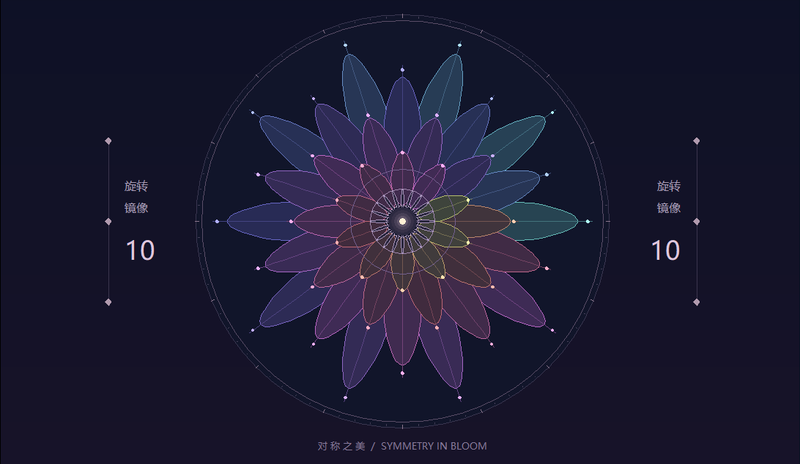

03 / SYMMETRY IN BLOOM
一笔，生花。
画下一条线，
看它在每个方向回应你。
旋转 · 镜像 · 你的笔迹CREATIVE CANVAS / 03

在圆内画一笔
你的线条会同时旋转与镜像
正在准备画笔，也可以先欣赏静态预览。
灵感示例开始手绘后在圆内拖动；结束手绘后可在画布上滑动页面。改变份数与配色会更新整幅图案。
A LITTLE LINE, MANY POSSIBILITIES
对称，让一笔拥有很多种可能。
同一条曲线先做镜像，再绕圆心旋转。每次换一个角度、留一处空白，都能长出不同的纹样。
键盘、触摸与保存
Tab 可逐个访问控制按钮与选择框。不用画笔也能调整示例的份数和配色，保存新的图案。
绘画模式内，单指或鼠标拖动即可画线；第二个触点、移出圆形边界、失焦或切换页面会取消尚未完成的一笔。已完成的笔迹保留。
最多 60 笔、2400 个点，每笔最多 400 点。达到上限后可撤销或清空；不会自动删掉旧笔迹。“换回示例”会替换当前手绘。图片由浏览器在本地生成并下载。